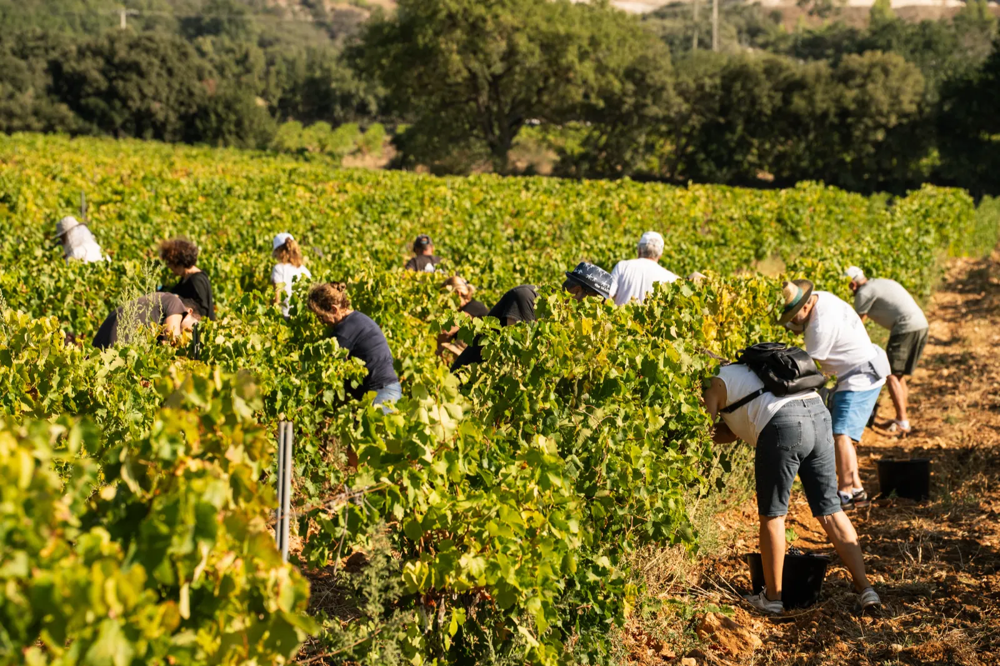
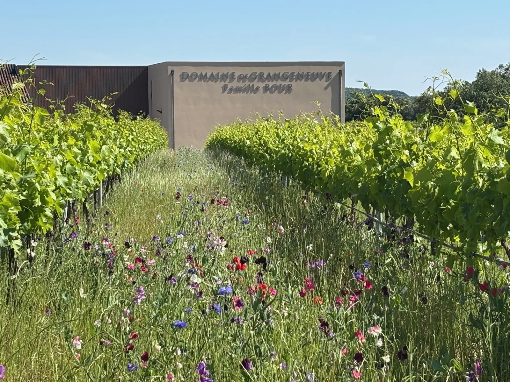
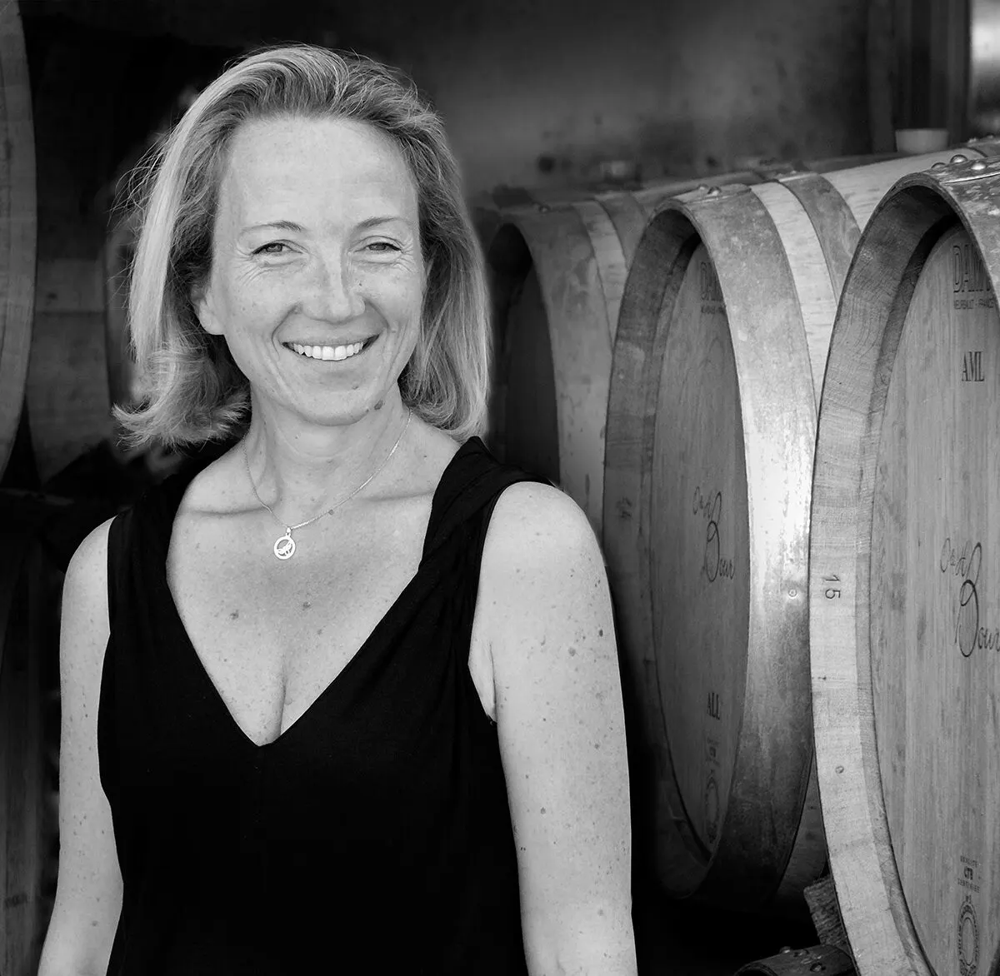
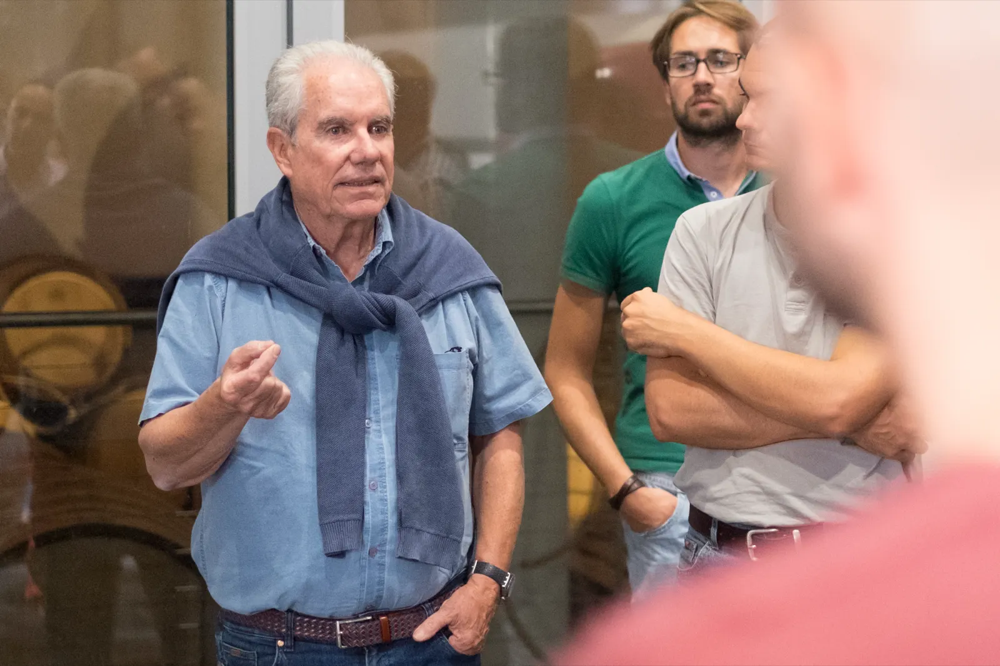
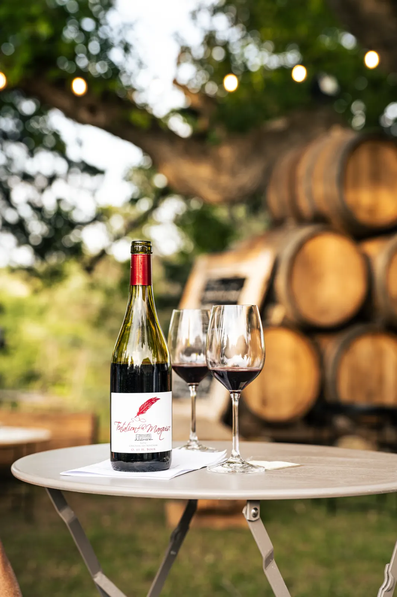
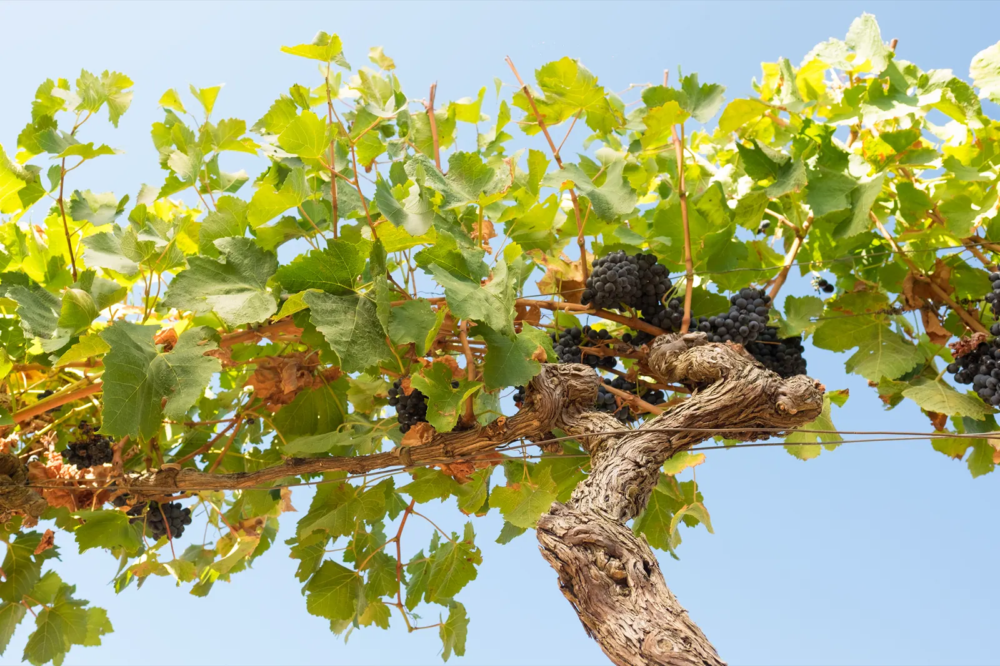
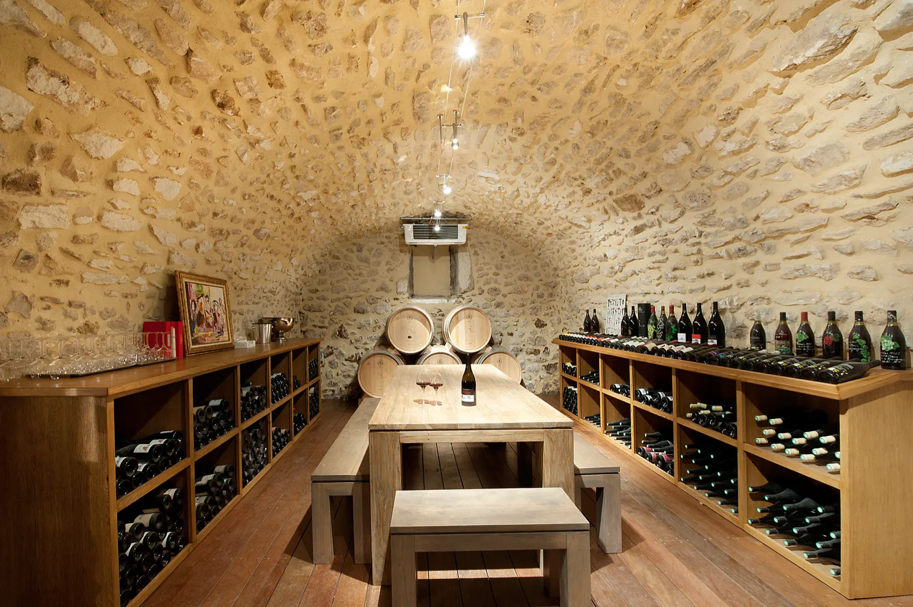

Entrez et poussez les portes des Domaines Bour.

Propriété de la famille Bour depuis les années 60, au cœur de la Drôme Provençale, dans l’AOC Grignan-les-Adhémar. Une troisième génération d’amoureux de la terre poursuit l’œuvre des pionniers.
- 1964installation de la famille Bour en Drôme Provençale
- 80 haen culture raisonnée à Grangeneuve
- HVEHaute Valeur Environnementale depuis 2020
- 15 ha bioau Domaine de la Grangeverte
- 7/7caveau de dégustation ouvert toute l’année


Une histoire de famille, l’évolution d’une culture.
Aux portes de la Drôme Provençale, nos parcelles sont bercées par la fraîcheur du nord et l’ensoleillement du sud. C’est le terroir qui signe le vin.
Le Domaine de Grangeneuve et le Domaine la Grangeverte sont les deux exploitations des Domaines Bour : la vigne a pris la place des bois de chênes, dans une AOC alors totalement méconnue.
« Le Domaine de Grangeneuve a été créé il y a 60 ans par mes parents, Odette et Henri Bour. C’est maintenant le tour de la troisième génération : Nathalie, ma fille aînée, est venue rejoindre le domaine à la fin des années 2000 pour prendre la relève. »
Les activités au domaine
L’œnotourisme au fil des saisons. En intérieur ou en extérieur, en hiver comme en été : initiation à la dégustation, atelier assemblage, vins et truffes, vendanges, balades dans les vignes, autour du métier de vigneron.


-
Dégustation classique au caveau
Gratuit7/7, entrée libre, 30 minutes. Jusqu’à 7 personnes, puis 10 € par personne à partir de 8.
Découverte de l’univers Grangeneuve à travers la dégustation des cuvées incontournables du domaine.
Réserver -
Dégustation gourmande
15 €/pers.7/7 sur réservation, 1 heure. De 1 à 14 personnes (20 € à partir de 15).
Une parenthèse gourmande au cœur de notre caveau : 6 cuvées accompagnées de mets régionaux à tartiner.
Réserver -
Dégustation sur barriques
40 €/pers.Dès 8 personnes, de préférence du jeudi au samedi, 1 h à 1 h 30.
Nos vins directement tirés de la barrique, pour comprendre son influence selon 4 facteurs : l’âge, la taille, la chauffe et le tonnelier.
Réserver -
Atelier Vins & Fromages
40 €/pers.De 6 à 20 personnes, de préférence du jeudi au samedi, 1 h à 1 h 30.
Cinq fromages en accord avec cinq vins.
Réserver -
Atelier assemblage
50 €/pers.De 6 à 20 personnes, de préférence du jeudi au samedi, 2 h à 2 h 30.
Création d’une cuvée personnalisée à partir de 4 bruts de cuve.
Réserver -
Petite balade dans le vignoble
Gratuit7/7 sans réservation, entre 1 h et 2 h.
Deux parcours à travers nos vignes et la campagne, avec le plan des sentiers remis au caveau, des panneaux pédagogiques et des enregistrements audio.
-
Dans la peau d’un vigneron
60 €/pers.De 20 à 50 personnes, un samedi en septembre, 7 heures.
Vendanges à la main, visite de cave, dégustation en direct du chai à barriques et repas vigneron sous les chênes centenaires.
Nous contacter -
La truffe tout simplement
40 à 70 €/pers.De 12 à 40 personnes, en période de truffe, 2 h 30.
Une démonstration de cavage avec un trufficulteur et son chien, puis un déjeuner autour de la truffe, avec nos cuvées en accord.
Nous contacter
Des vins qui nous ressemblent
Une exigence permanente de qualité depuis plus de 60 ans. Les vinifications sont réalisées par cépage et par parcelle, en nous adaptant au potentiel de chaque vigne et à l’expression recherchée pour chaque cuvée.
Les incontournables
Les signatures du domaine, qui rassemblent les cépages rhodaniens plantés à Grangeneuve.
- Vieilles Vignes
- Terre d’Epices
- La Truffière
- Les Dames Blanches du Sud
- V
- Le Rosé de Grangeneuve
- L’Initiale H
Les Grandes Gardes
Des vins qui connaîtront leur apogée d’ici 5 à 10 ans.
- 24M La Truffière
- La Syrah de mon Père
- Foudre

Le bio
La Marquise de Sévigné aimait venir déguster les baies de raisin gorgées de soleil sur les collines de Clairet. Syrah et Grenache s’expriment pleinement dans notre gamme bio, avec Tentation de la Marquise Rouge.

Le caveau
Fort de 60 ans d’expérience dans l’accueil de particuliers, de groupes et de séminaires, nous vous accueillons toute l’année, dans un cadre calme, au plus proche de notre métier.
Notre équipe, portée par Antoine, notre sommelier formé au lycée viticole d’Orange et à l’Académie Internationale des Vins d’Alsace, vous parlera de notre histoire, nos terroirs et nos cépages, et surtout de nos vins.